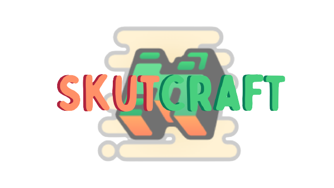

- Server Rules
1.1 Respect other players.
1.2 No advertising or mentioning other server.
1.3 Don't ask to become staff.
1.4 Don't impersonate staff.
- Chat Rules
2.1 No Spamming.
2.2 No Racism.
2.3 No all caps talking.
2.4 No unapproved links.
2.5 Be appropriate.
2.6 Don't complain about lag.
2.7 Be nice to other player.
- Other Rules
3.1 No begging. Asking nicely once or twice is acceptable.
3.2 No griefing. Please do not destroy, deface, graffiti, or build on top of another person’s constructions.
3.3 Please don’t try and crash the plugins or bots
3.4 No hacking. Using interface mods or programs to circumvent our security system can lead to being banned
3.5 No player killing in non-player killing areas.
3.6 No massive redstone clocks or devices that run 24/7 without approval.
3.7 No offensive builds, names or skins.
3.8 No scamming players.
3.9 Maximum of 20 of each animals per person.
3.10 All technical issues or tech support issues related to Minecraft are to go through the Help Desk.